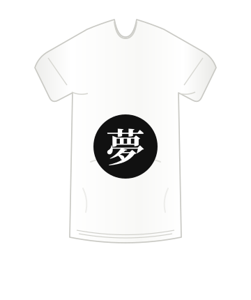

Paper
CSS token
Page background
Never Say Never / early identity
A live board for the first resilience direction. The audience is a hypothesis, the shirt marks are draft concepts, and the formal brand promise remains undecided.
The storefront and this board use the same shared CSS and artwork.
People encouraging someone through pressure
Broad mental and physical situations; not validated with customers.
Hero · resilience
Rising again after failure is the recurring brand idea.
Modernist · learner choice
Chosen for its simple, clear visual style.
Brand promise: Not chosen yet. The current no separate slogan is used in the current product presentation.
Draft logo proposal. This SVG is shared with the storefront.

Small-size preview · 110px wide
Monochrome preview · one color
Review this proposal at the actual navigation size and in one color before keeping it. The artwork is original SVG, not trademark-cleared.
All three use the relaxed, shorter white T-shirt and black circle shown in the storefront. Choose white, crimson, gold, or sky-blue kanji; the colored inks can be shiny or matte.



Kanji colors: White Crimson Gold Sky blue. Colored kanji can have shine or a matte finish; white is matte. The black circle remains fixed. The kanji and their meanings have not had Japanese-language review. Lazy Arie is used only in this local draft; confirm its usage terms before publishing.
These swatches read the same CSS variables used by the storefront.
CSS token
Page background
CSS token
Text and primary action
CSS token
Selection and emphasis
CSS token
Product surface
CSS token
Supporting text
Check contrast for text, backgrounds, focus indicators, and button states in the actual page.
The display and body samples use the storefront's shared font variables.
T-shirt with
encouraging kanji.
Two draft kanji marks are shown on the same white T-shirt.
One product. Deliberate choices.
Shared spacing variables keep the storefront and board in rhythm.
CSS token
CSS token
CSS token
CSS token
CSS token
CSS token
Voice traits: bold, encouraging, empathetic.
T-shirt with encouraging kanji.
The storefront uses a direct product title without a separate motivational slogan.
These are prototype choices; their audience effect is untested.